<section class="oe_container" style="font-family:Poppins,'Segoe UI',Arial,Helvetica,sans-serif;color:#1d2433">
<div style="max-width:1140px;margin:auto;padding:10px 6px">

  <!-- HERO -->
  <div style="background:#0e1b39;background-image:linear-gradient(rgba(255,255,255,.04) 1px,transparent 1px),linear-gradient(90deg,rgba(255,255,255,.04) 1px,transparent 1px);background-size:40px 40px;border-radius:18px;padding:44px 44px 38px;color:#fff">
    <div style="color:#1fa9c9;letter-spacing:4px;font-size:14px;font-weight:600">ODOO 19 | COMMUNITY AND ENTERPRISE</div>
    <h1 style="margin:10px 0 8px;font-size:46px;line-height:1.15;color:#fff;font-weight:700">EduAgent <span style="color:#1fa9c9">AI</span> &middot; E-Learning Suite</h1>
    <p style="font-size:19px;color:#c9d3e6;margin:0 0 22px;max-width:820px">Simplilearn-grade AI agents for training companies, coaching institutes, universities and corporate academies. 11 agents cover the full learner journey from first enquiry to a verified credential and a job, all on Odoo eLearning, CRM, Sales and Accounting.</p>
    <span style="display:inline-block;background:#1fa9c9;color:#fff;border-radius:22px;padding:8px 18px;margin:4px 6px 4px 0;font-size:14.5px">11 AI agents</span>
    <span style="display:inline-block;border:1px solid rgba(255,255,255,.3);border-radius:22px;padding:8px 18px;margin:4px 6px 4px 0;font-size:14.5px">Bring your own key: OpenAI, Claude, Gemini, Ollama</span>
    <span style="display:inline-block;border:1px solid rgba(255,255,255,.3);border-radius:22px;padding:8px 18px;margin:4px 6px 4px 0;font-size:14.5px">Works offline in demo mode</span>
    <span style="display:inline-block;border:1px solid rgba(255,255,255,.3);border-radius:22px;padding:8px 18px;margin:4px 6px 4px 0;font-size:14.5px">EU AI Act ready</span>
    <span style="display:inline-block;border:1px solid rgba(255,255,255,.3);border-radius:22px;padding:8px 18px;margin:4px 6px 4px 0;font-size:14.5px">36 automated tests</span>
  </div>

  <!-- PROBLEM / OUTCOME -->
  <table style="width:100%;border-collapse:separate;border-spacing:14px;margin-top:22px">
    <tr>
      <td style="vertical-align:top;width:50%;background:#fff5f5;border-radius:12px;padding:20px 22px;border:1px solid #f3d4d4">
        <div style="color:#c0392b;font-weight:700;letter-spacing:2px;font-size:13px">THE PROBLEM</div>
        <ul style="margin:10px 0 0;padding-left:18px;line-height:1.8;font-size:15.5px">
          <li>Most online learners never finish: completion is often 5&ndash;15%</li>
          <li>Leads arrive at night and on weekends; counsellors reply the next day</li>
          <li>Course production is slow; doubt-clearing doesn't scale</li>
          <li>Refunds and overdue EMIs hurt cash flow</li>
          <li>LMS, CRM, fees and support live in different tools</li>
        </ul></td>
      <td style="vertical-align:top;width:50%;background:#effaf5;border-radius:12px;padding:20px 22px;border:1px solid #cdeedd">
        <div style="color:#1f9c6b;font-weight:700;letter-spacing:2px;font-size:13px">WHAT EDUAGENT AI DOES</div>
        <ul style="margin:10px 0 0;padding-left:18px;line-height:1.8;font-size:15.5px">
          <li>Answers enquiries 24/7, creates and scores CRM leads, books calls</li>
          <li>Tutors every learner from your own course content, with sources</li>
          <li>Spots at-risk learners daily and nudges them back</li>
          <li>Builds draft courses in minutes; imports SCORM</li>
          <li>One record per learner, from lead to fee to certificate to job</li>
        </ul></td>
    </tr>
  </table>

  <!-- AGENT MAP -->
  <h2 style="margin:40px 0 4px;color:#0e1b39;font-size:30px">11 agents across the learner lifecycle</h2>
  <table style="width:100%;border-collapse:separate;border-spacing:10px">
    <tr>
      <td style="vertical-align:top;background:#0e1b39;color:#fff;border-radius:12px;padding:18px 18px;width:20%">
      <div style="color:#1fa9c9;font-weight:700;font-size:17px;margin-bottom:6px">Acquire</div>
      <div style="font-size:14px;line-height:1.55;color:#d6deee"><b>Admissions Agent</b><br/>24/7 counsellor on your website<br/><br/><b>Fee &amp; EMI Agent</b><br/>EMI schedules, payment links, reminders</div></td>
      <td style="vertical-align:top;background:#0e1b39;color:#fff;border-radius:12px;padding:18px 18px;width:20%">
      <div style="color:#1fa9c9;font-weight:700;font-size:17px;margin-bottom:6px">Learn</div>
      <div style="font-size:14px;line-height:1.55;color:#d6deee"><b>Course Builder</b> + SCORM import<br/><br/><b>Course Tutor</b><br/>RAG on your lessons<br/><br/><b>Practice &amp; Quiz</b><br/>spaced repetition</div></td>
      <td style="vertical-align:top;background:#0e1b39;color:#fff;border-radius:12px;padding:18px 18px;width:20%">
      <div style="color:#1fa9c9;font-weight:700;font-size:17px;margin-bottom:6px">Assess</div>
      <div style="font-size:14px;line-height:1.55;color:#d6deee"><b>Project Mentor</b><br/>rubric feedback<br/><br/><b>Integrity Agent</b><br/>explain-your-learning checks<br/><br/>Verifiable credentials</div></td>
      <td style="vertical-align:top;background:#0e1b39;color:#fff;border-radius:12px;padding:18px 18px;width:20%">
      <div style="color:#1fa9c9;font-weight:700;font-size:17px;margin-bottom:6px">Retain</div>
      <div style="font-size:14px;line-height:1.55;color:#d6deee"><b>Retention Coach</b><br/>dropout radar and nudges<br/><br/><b>Support Agent</b><br/>FAQ answers and tickets</div></td>
      <td style="vertical-align:top;background:#0e1b39;color:#fff;border-radius:12px;padding:18px 18px;width:20%">
      <div style="color:#1fa9c9;font-weight:700;font-size:17px;margin-bottom:6px">Outcome</div>
      <div style="font-size:14px;line-height:1.55;color:#d6deee"><b>Career Agent</b><br/>skills, resume, job match<br/><br/><b>Insights Agent</b><br/>ask your KPIs in plain English</div></td>
    </tr>
  </table>
  
    <div style="margin:34px 0 10px">
      <h4 style="margin:0 0 6px;color:#1d2433;font-size:20px;font-weight:600">Every agent is configurable</h4>
      <p style="margin:0 0 14px;color:#5b667a;font-size:15.5px;line-height:1.6">Edit each agent's instructions, model (fast or main), access (website, learner hub), knowledge sources and the exact actions it may take. Usage and conversations are counted per agent.</p>
      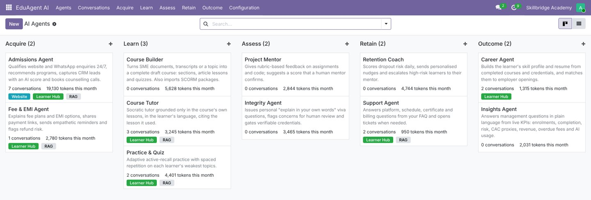
    </div>

  <div style="margin-top:64px">
    <div style="color:#1fa9c9;font-weight:600;letter-spacing:3px;font-size:13px">SECTION 01 &middot; ACQUIRE</div>
    <h2 style="margin:6px 0 16px;color:#0e1b39;font-size:32px;font-weight:700">Turn website visitors into qualified leads, day and night</h2>
    <div style="background:#eef4fb;border-left:5px solid #1f4e9c;border-radius:8px;padding:16px 20px;color:#1d2433;font-size:15.5px;line-height:1.6">
      <b style="color:#1f4e9c;letter-spacing:1.5px;font-size:12.5px">IN BRIEF</b><br/>The Admissions Agent chats on <code>/eduagent</code> (or any page), recommends matching programs from your catalogue, captures contact details into a scored CRM lead and books a counselling call for your team. Fees and EMI plans are attached to the sales order and tracked against real invoice payments.
    </div>
    
    <div style="margin:34px 0 10px">
      <h4 style="margin:0 0 6px;color:#1d2433;font-size:20px;font-weight:600">1. Visitor chats with the AI counsellor</h4>
      <p style="margin:0 0 14px;color:#5b667a;font-size:15.5px;line-height:1.6">Recommendations link straight to your course pages. Contact details are read by the module itself, so they are never sent to the AI provider when privacy masking is on.</p>
      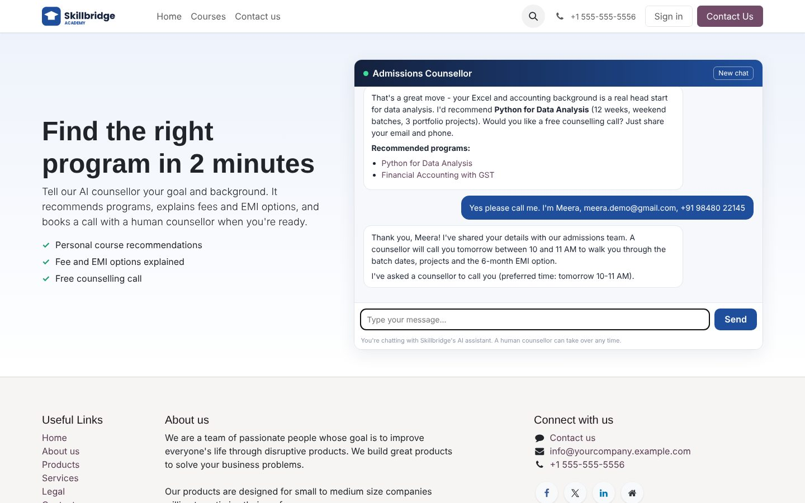
    </div>
    <div style="margin:34px 0 10px">
      <h4 style="margin:0 0 6px;color:#1d2433;font-size:20px;font-weight:600">2. A scored lead lands in CRM</h4>
      <p style="margin:0 0 14px;color:#5b667a;font-size:15.5px;line-height:1.6">Goal, background, budget, timeline, recommended courses and the full transcript are on the lead. A counselling-call activity is scheduled for the admissions team.</p>
      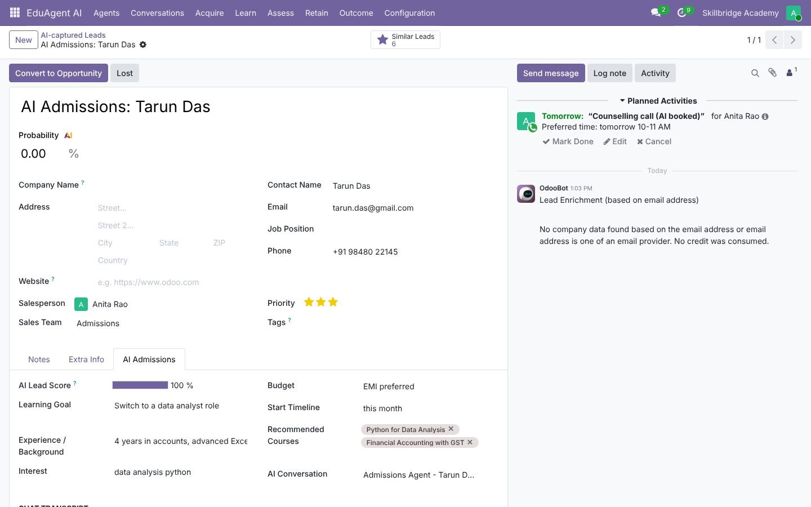
    </div>
    <div style="margin:34px 0 10px">
      <h4 style="margin:0 0 6px;color:#1d2433;font-size:20px;font-weight:600">3. Staff can take over any chat</h4>
      <p style="margin:0 0 14px;color:#5b667a;font-size:15.5px;line-height:1.6">Every conversation is logged. One click hands it to a human; replies appear in the visitor's chat window.</p>
      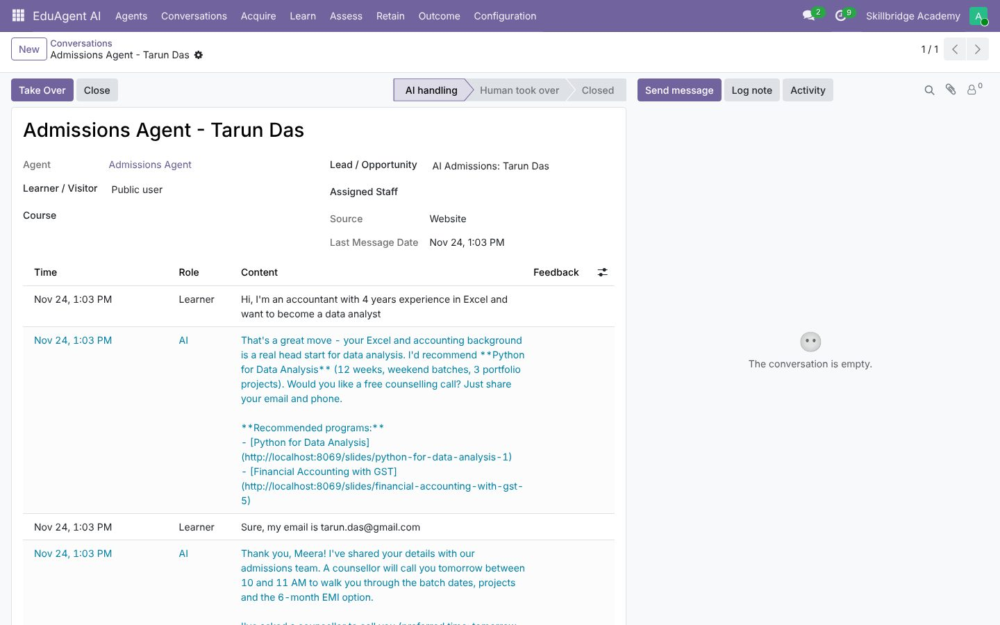
    </div>
    <div style="margin:34px 0 10px">
      <h4 style="margin:0 0 6px;color:#1d2433;font-size:20px;font-weight:600">4. EMI plan on the sales order</h4>
      <p style="margin:0 0 14px;color:#5b667a;font-size:15.5px;line-height:1.6">Pick a plan (e.g. 6 instalments with 20% down payment) and generate the schedule. Instalments turn Paid automatically from the order's invoice payments, with no extra journal entries. Refund risk combines overdue fees with dropout risk.</p>
      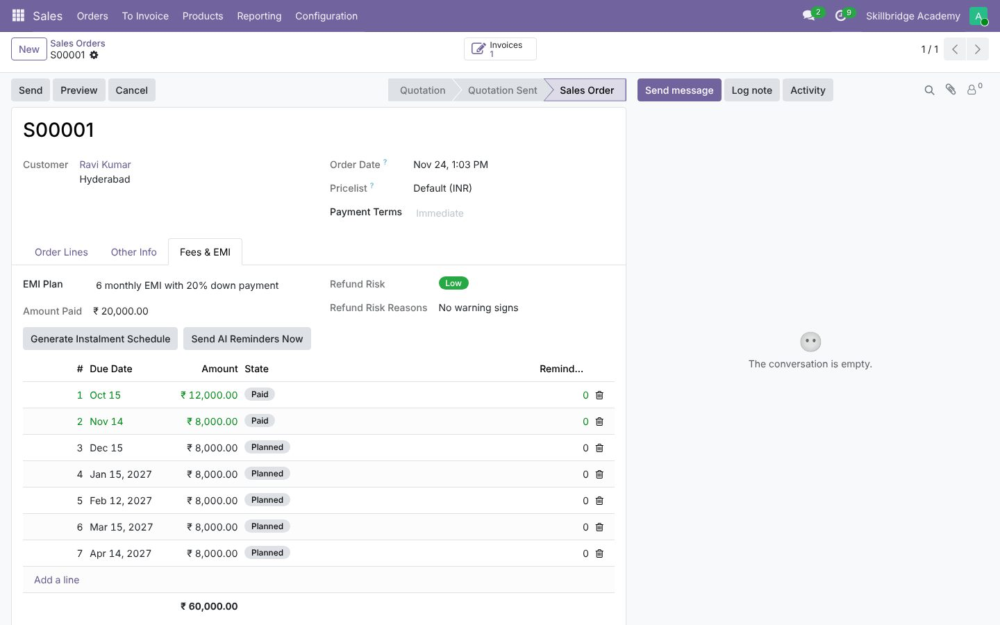
    </div>
    <div style="margin:34px 0 10px">
      <h4 style="margin:0 0 6px;color:#1d2433;font-size:20px;font-weight:600">5. Overdue fees at a glance</h4>
      <p style="margin:0 0 14px;color:#5b667a;font-size:15.5px;line-height:1.6">The Fee & EMI Agent emails polite, AI-written reminders with a secure payment link before and after each due date.</p>
      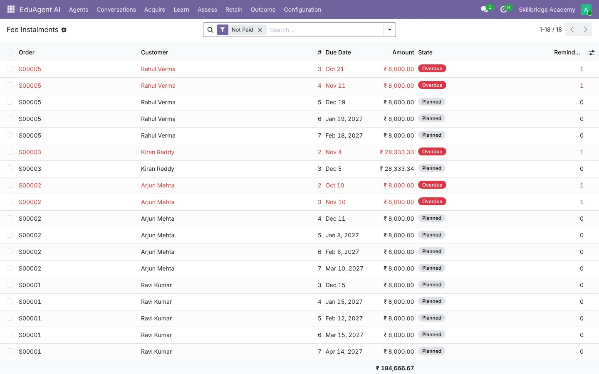
    </div>
  </div>
  <div style="margin-top:64px">
    <div style="color:#1fa9c9;font-weight:600;letter-spacing:3px;font-size:13px">SECTION 02 &middot; LEARN</div>
    <h2 style="margin:6px 0 16px;color:#0e1b39;font-size:32px;font-weight:700">Build courses in minutes and tutor every learner</h2>
    <div style="background:#eef4fb;border-left:5px solid #1f4e9c;border-radius:8px;padding:16px 20px;color:#1d2433;font-size:15.5px;line-height:1.6">
      <b style="color:#1f4e9c;letter-spacing:1.5px;font-size:12.5px">IN BRIEF</b><br/>The Course Builder turns a topic, PDF, notes or transcript into a draft Odoo eLearning course with sections, article lessons and quizzes. SCORM 1.2 / 2004 packages play in a built-in player with completion tracking. Every course gets an AI tutor grounded only in its own lessons.
    </div>
    
    <div style="margin:34px 0 10px">
      <h4 style="margin:0 0 6px;color:#1d2433;font-size:20px;font-weight:600">1. Describe the course or upload source material</h4>
      <p style="margin:0 0 14px;color:#5b667a;font-size:15.5px;line-height:1.6">Choose audience, level, language, number of sections and lessons, and whether to generate quiz questions.</p>
      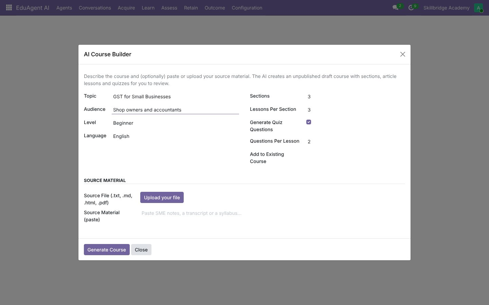
    </div>
    <div style="margin:34px 0 10px">
      <h4 style="margin:0 0 6px;color:#1d2433;font-size:20px;font-weight:600">2. A draft course is created</h4>
      <p style="margin:0 0 14px;color:#5b667a;font-size:15.5px;line-height:1.6">It stays unpublished until a human reviews it, and it is indexed for the AI tutor automatically.</p>
      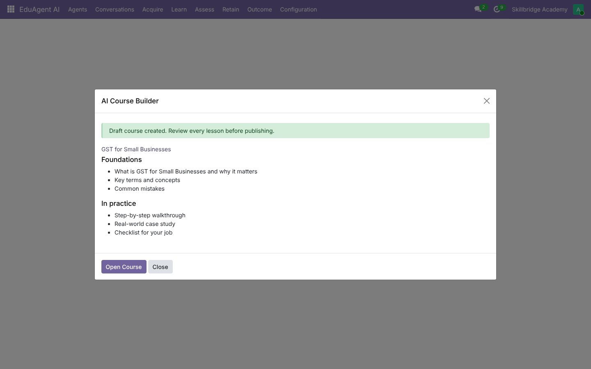
    </div>
    <div style="margin:34px 0 10px">
      <h4 style="margin:0 0 6px;color:#1d2433;font-size:20px;font-weight:600">3. Standard Odoo eLearning content</h4>
      <p style="margin:0 0 14px;color:#5b667a;font-size:15.5px;line-height:1.6">Lessons and quizzes are normal eLearning records: edit, reorder and publish as usual.</p>
      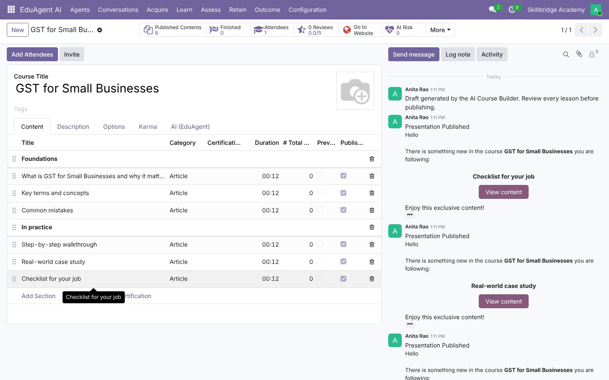
    </div>
    <div style="margin:34px 0 10px">
      <h4 style="margin:0 0 6px;color:#1d2433;font-size:20px;font-weight:600">4. AI settings per course</h4>
      <p style="margin:0 0 14px;color:#5b667a;font-size:15.5px;line-height:1.6">Turn the tutor on or off, issue credentials on completion, map the skills the course teaches and re-index knowledge with one click. At-risk learners, knowledge chunks and credentials appear as smart buttons.</p>
      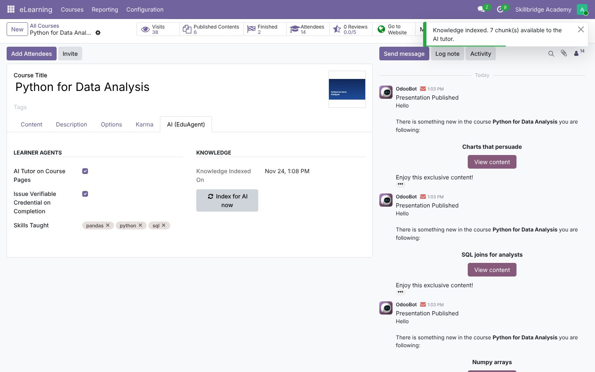
    </div>
    <div style="margin:34px 0 10px">
      <h4 style="margin:0 0 6px;color:#1d2433;font-size:20px;font-weight:600">5. SCORM player</h4>
      <p style="margin:0 0 14px;color:#5b667a;font-size:15.5px;line-height:1.6">Upload a SCORM zip from Learn > Import SCORM. Each SCO becomes a lesson; when the package reports completed/passed, the lesson is marked complete and the score is saved.</p>
      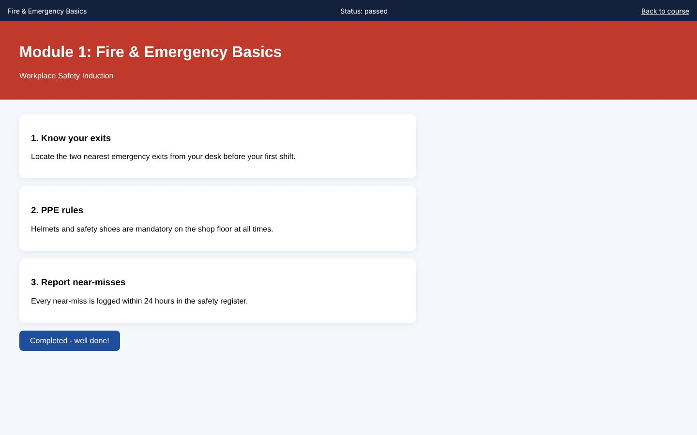
    </div>
    <div style="margin:34px 0 10px">
      <h4 style="margin:0 0 6px;color:#1d2433;font-size:20px;font-weight:600">6. AI tutor on every course page</h4>
      <p style="margin:0 0 14px;color:#5b667a;font-size:15.5px;line-height:1.6">Enrolled learners click AI Tutor on any course or lesson page. Answers come from that course's lessons and cite them.</p>
      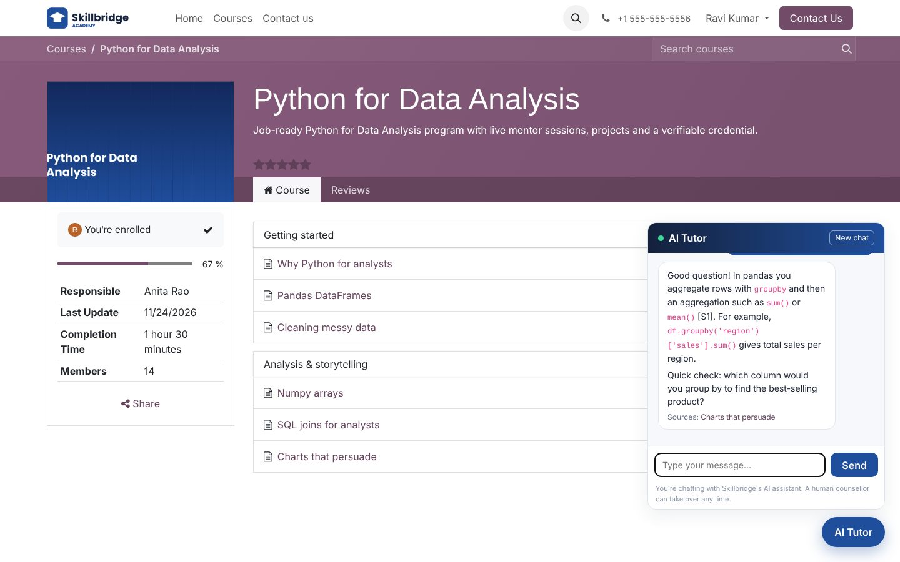
    </div>
    <div style="margin:34px 0 10px">
      <h4 style="margin:0 0 6px;color:#1d2433;font-size:20px;font-weight:600">7. The learner's AI Learning Hub (/my/eduagent)</h4>
      <p style="margin:0 0 14px;color:#5b667a;font-size:15.5px;line-height:1.6">Tutor, practice, support, career and fee assistants in one place, with progress, practice mastery, credentials, projects and fee schedule.</p>
      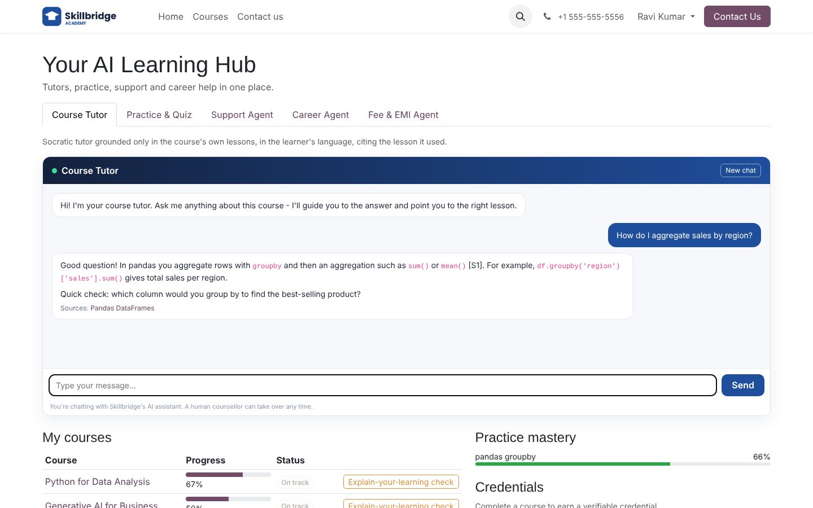
    </div>
    <div style="margin:34px 0 10px">
      <h4 style="margin:0 0 6px;color:#1d2433;font-size:20px;font-weight:600">8. Adaptive practice with spaced repetition</h4>
      <p style="margin:0 0 14px;color:#5b667a;font-size:15.5px;line-height:1.6">The Practice agent asks one question at a time, grades the answer, records mastery per topic and brings weak topics back on a 1-3-7-14-30 day schedule.</p>
      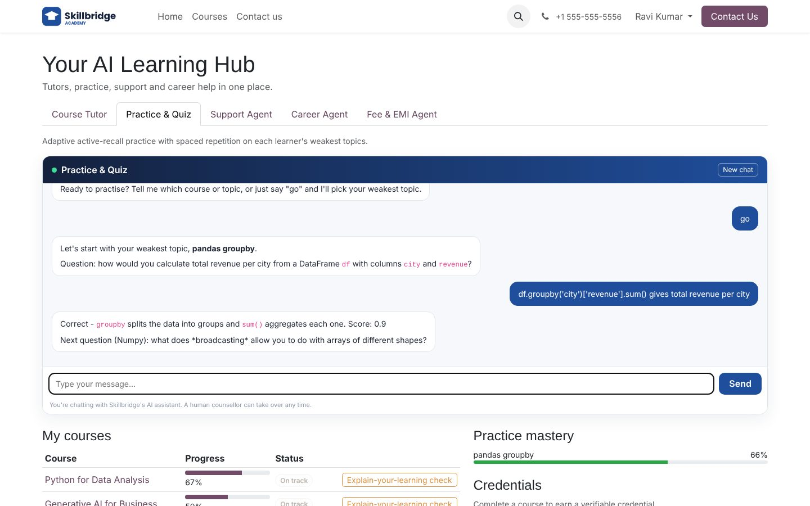
    </div>
  </div>
  <div style="margin-top:64px">
    <div style="color:#1fa9c9;font-weight:600;letter-spacing:3px;font-size:13px">SECTION 03 &middot; ASSESS</div>
    <h2 style="margin:6px 0 16px;color:#0e1b39;font-size:32px;font-weight:700">Feedback at scale, decisions by humans</h2>
    <div style="background:#eef4fb;border-left:5px solid #1f4e9c;border-radius:8px;padding:16px 20px;color:#1d2433;font-size:15.5px;line-height:1.6">
      <b style="color:#1f4e9c;letter-spacing:1.5px;font-size:12.5px">IN BRIEF</b><br/>AI drafts feedback and flags concerns; a mentor or reviewer always takes the final decision. That keeps assessment fair and makes the module ready for the EU AI Act, where grading and proctoring AI is high-risk.
    </div>
    
    <div style="margin:34px 0 10px">
      <h4 style="margin:0 0 6px;color:#1d2433;font-size:20px;font-weight:600">1. Rubric-based project feedback</h4>
      <p style="margin:0 0 14px;color:#5b667a;font-size:15.5px;line-height:1.6">Learners submit work from the hub. The Project Mentor scores each rubric criterion, lists strengths and improvements and suggests a score. The mentor confirms or returns it.</p>
      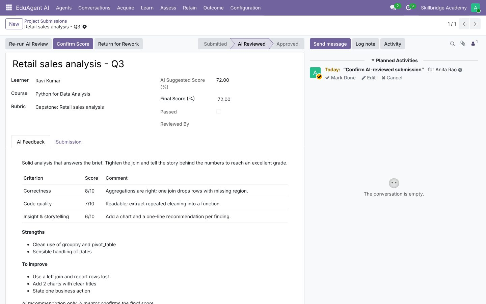
    </div>
    <div style="margin:34px 0 10px">
      <h4 style="margin:0 0 6px;color:#1d2433;font-size:20px;font-weight:600">2. Explain-your-learning check</h4>
      <p style="margin:0 0 14px;color:#5b667a;font-size:15.5px;line-height:1.6">A personal viva-style question generated from the course. Paste and timing signals are recorded.</p>
      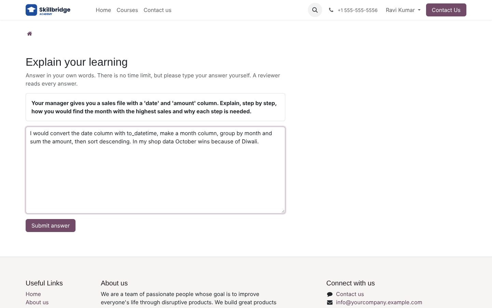
    </div>
    <div style="margin:34px 0 10px">
      <h4 style="margin:0 0 6px;color:#1d2433;font-size:20px;font-weight:600">3. Reviewer decides</h4>
      <p style="margin:0 0 14px;color:#5b667a;font-size:15.5px;line-height:1.6">The AI estimates understanding and lists concerns as decision support only. Pass or Not Passed is a human action. Optionally, credentials require a passed check.</p>
      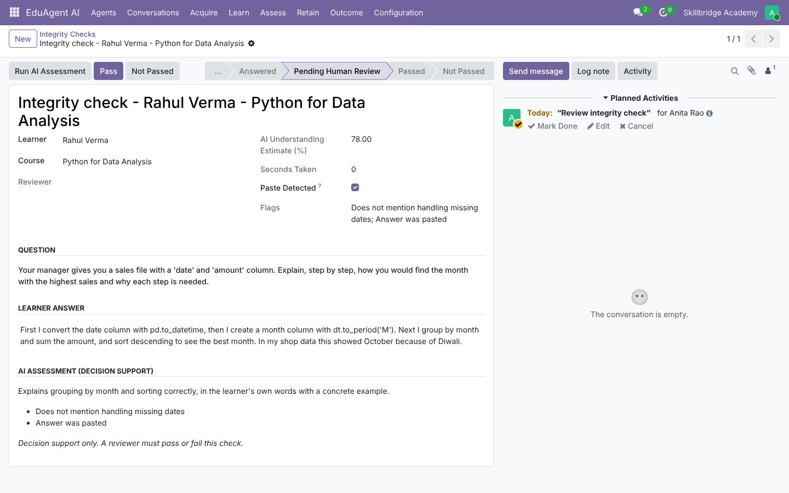
    </div>
    <div style="margin:34px 0 10px">
      <h4 style="margin:0 0 6px;color:#1d2433;font-size:20px;font-weight:600">4. Verifiable credentials</h4>
      <p style="margin:0 0 14px;color:#5b667a;font-size:15.5px;line-height:1.6">Issued automatically on completion and signed with HMAC-SHA256. Credentials can be revoked.</p>
      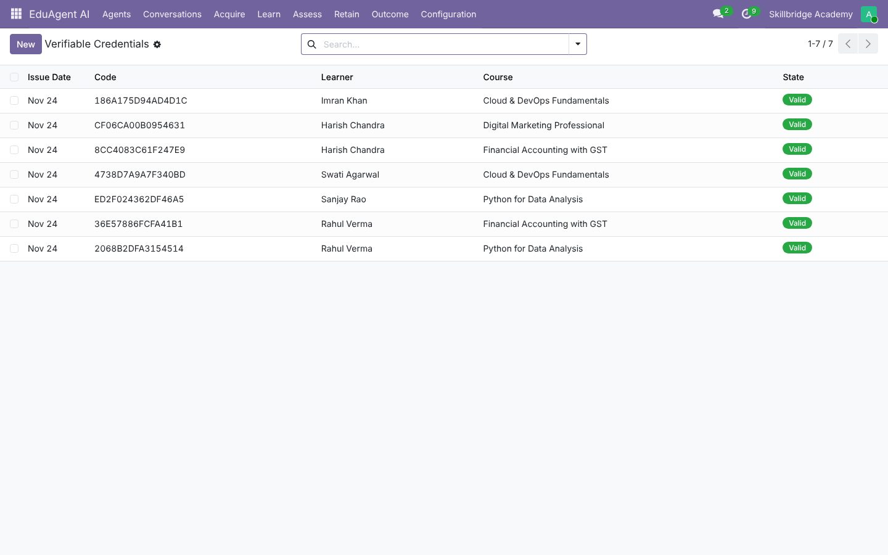
    </div>
    <div style="margin:34px 0 10px">
      <h4 style="margin:0 0 6px;color:#1d2433;font-size:20px;font-weight:600">5. Public verification page</h4>
      <p style="margin:0 0 14px;color:#5b667a;font-size:15.5px;line-height:1.6">Employers enter the code on /eduagent/verify. Tampered or revoked credentials are rejected.</p>
      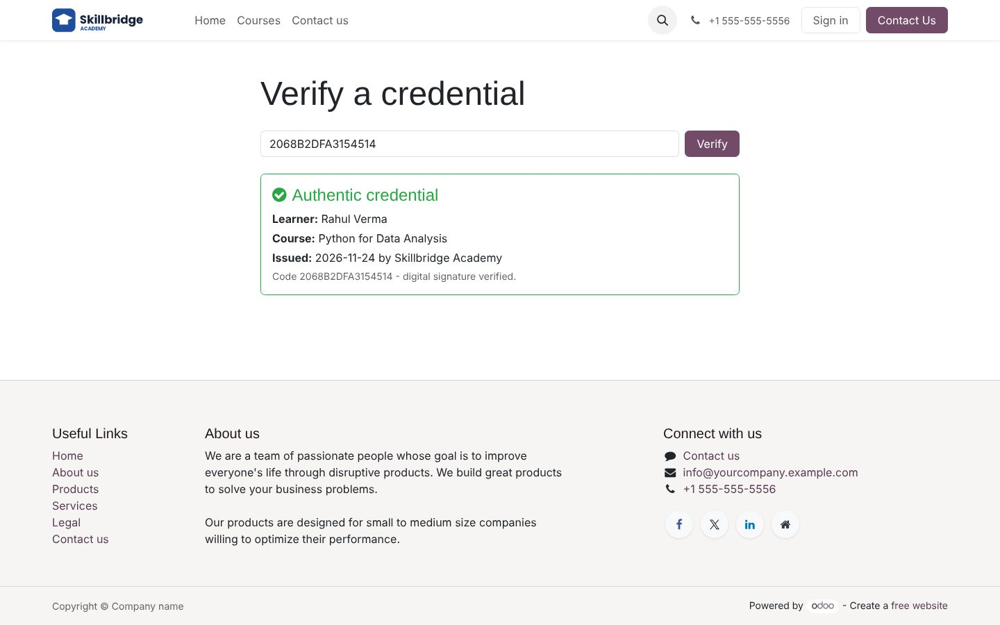
    </div>
  </div>
  <div style="margin-top:64px">
    <div style="color:#1fa9c9;font-weight:600;letter-spacing:3px;font-size:13px">SECTION 04 &middot; RETAIN</div>
    <h2 style="margin:6px 0 16px;color:#0e1b39;font-size:32px;font-weight:700">Catch dropouts before they happen</h2>
    <div style="background:#eef4fb;border-left:5px solid #1f4e9c;border-radius:8px;padding:16px 20px;color:#1d2433;font-size:15.5px;line-height:1.6">
      <b style="color:#1f4e9c;letter-spacing:1.5px;font-size:12.5px">IN BRIEF</b><br/>Every night the Retention Coach scores each active enrolment from inactivity, progress versus expected pace, quiz struggles and overdue fees. Each score shows its reasons. Medium and high-risk learners get a personal nudge (at most one every 5 days) and high-risk learners are escalated to the course mentor.
    </div>
    
    <div style="margin:34px 0 10px">
      <h4 style="margin:0 0 6px;color:#1d2433;font-size:20px;font-weight:600">1. Learner Risk Radar</h4>
      <p style="margin:0 0 14px;color:#5b667a;font-size:15.5px;line-height:1.6">Sorted by risk, with plain-language reasons. Select learners to recompute or send a nudge now.</p>
      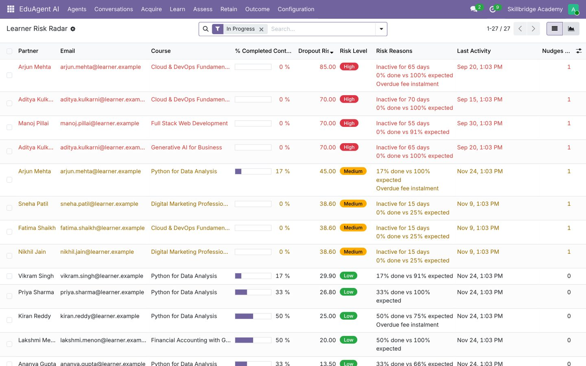
    </div>
    <div style="margin:34px 0 10px">
      <h4 style="margin:0 0 6px;color:#1d2433;font-size:20px;font-weight:600">2. Nudges and their effect</h4>
      <p style="margin:0 0 14px;color:#5b667a;font-size:15.5px;line-height:1.6">Each nudge records whether the learner completed a lesson within 7 days.</p>
      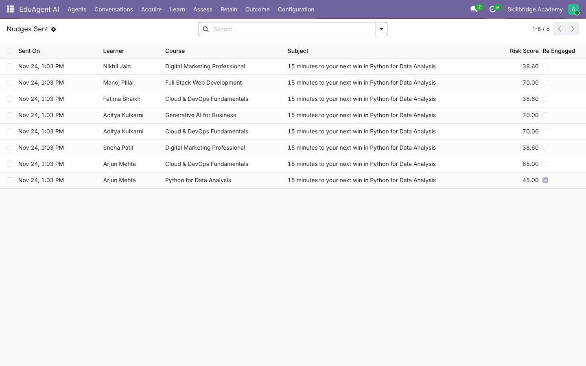
    </div>
    <div style="margin:34px 0 10px">
      <h4 style="margin:0 0 6px;color:#1d2433;font-size:20px;font-weight:600">3. Support Agent and tickets</h4>
      <p style="margin:0 0 14px;color:#5b667a;font-size:15.5px;line-height:1.6">Answers from your FAQ and policies; opens EDU-numbered tickets when a person is needed (mirrors to Odoo Helpdesk when installed).</p>
      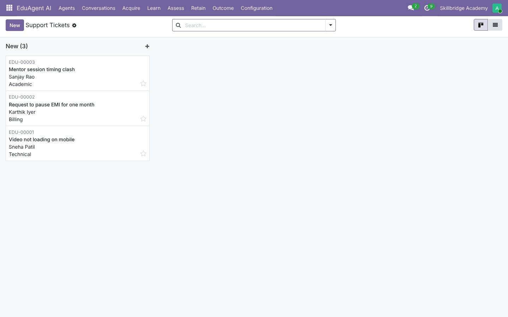
    </div>
  </div>
  <div style="margin-top:64px">
    <div style="color:#1fa9c9;font-weight:600;letter-spacing:3px;font-size:13px">SECTION 05 &middot; OUTCOME</div>
    <h2 style="margin:6px 0 16px;color:#0e1b39;font-size:32px;font-weight:700">Prove outcomes to learners, employers and management</h2>
    <div style="background:#eef4fb;border-left:5px solid #1f4e9c;border-radius:8px;padding:16px 20px;color:#1d2433;font-size:15.5px;line-height:1.6">
      <b style="color:#1f4e9c;letter-spacing:1.5px;font-size:12.5px">IN BRIEF</b><br/>The Career Agent builds a skill profile from completed courses, writes a resume using only verified facts and matches learners to employer openings. The Insights Agent answers management questions from live numbers.
    </div>
    
    <div style="margin:34px 0 10px">
      <h4 style="margin:0 0 6px;color:#1d2433;font-size:20px;font-weight:600">1. Skill profile and job matches</h4>
      <p style="margin:0 0 14px;color:#5b667a;font-size:15.5px;line-height:1.6">Skills come from the courses a learner completed. Matches are scored against each opening's required skills (AI can extract them from a job post).</p>
      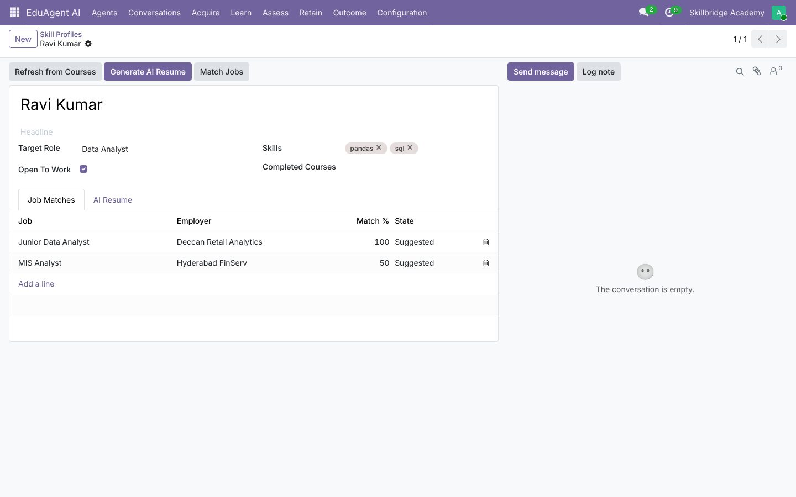
    </div>
    <div style="margin:34px 0 10px">
      <h4 style="margin:0 0 6px;color:#1d2433;font-size:20px;font-weight:600">2. Ask the Insights Agent</h4>
      <p style="margin:0 0 14px;color:#5b667a;font-size:15.5px;line-height:1.6">Ask in plain English, for example "Which courses have the highest dropout risk and what should we do this week?" It answers from live KPIs covering enrolments, completion, risk, leads, revenue, overdue fees and AI cost, and shows the numbers it used.</p>
      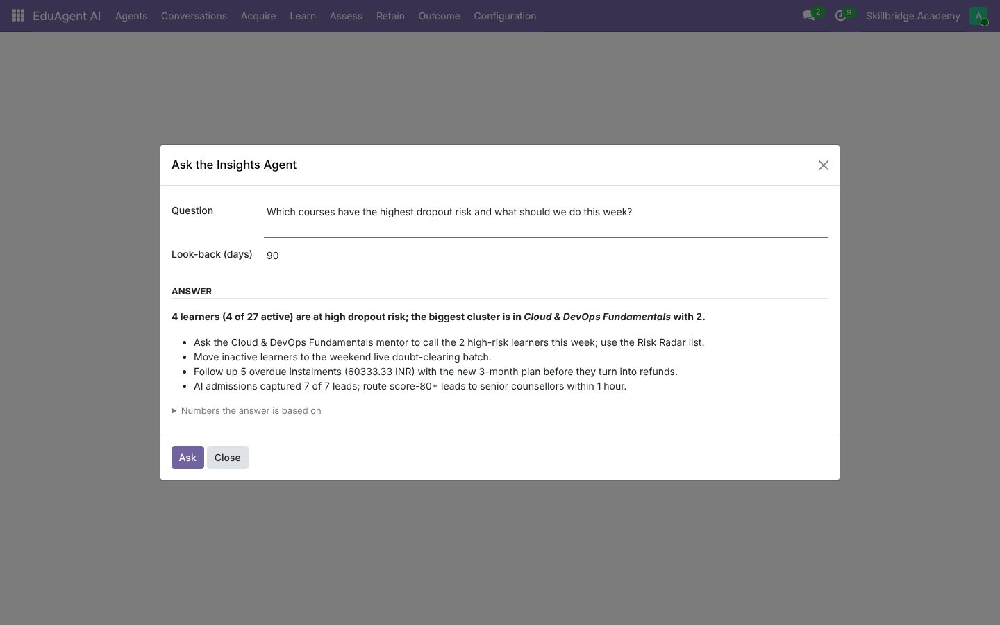
    </div>
  </div>
  <div style="margin-top:64px">
    <div style="color:#1fa9c9;font-weight:600;letter-spacing:3px;font-size:13px">SECTION 06 &middot; PLATFORM</div>
    <h2 style="margin:6px 0 16px;color:#0e1b39;font-size:32px;font-weight:700">Safe, auditable and cost-controlled AI</h2>
    <div style="background:#eef4fb;border-left:5px solid #1f4e9c;border-radius:8px;padding:16px 20px;color:#1d2433;font-size:15.5px;line-height:1.6">
      <b style="color:#1f4e9c;letter-spacing:1.5px;font-size:12.5px">IN BRIEF</b><br/>Bring your own key and keep control of data and cost. Every AI call passes through one gateway that masks personal data, blocks prompt injection, enforces budgets and writes an audit log.
    </div>
    
    <div style="margin:34px 0 10px">
      <h4 style="margin:0 0 6px;color:#1d2433;font-size:20px;font-weight:600">1. Settings</h4>
      <p style="margin:0 0 14px;color:#5b667a;font-size:15.5px;line-height:1.6">Default provider, monthly token budget, per-learner daily message limit, privacy masking (email, phone, card, Aadhaar, PAN), EU AI Act mode, AI disclosure text, auto-nudges, expected course duration, oral-check gate and admissions team.</p>
      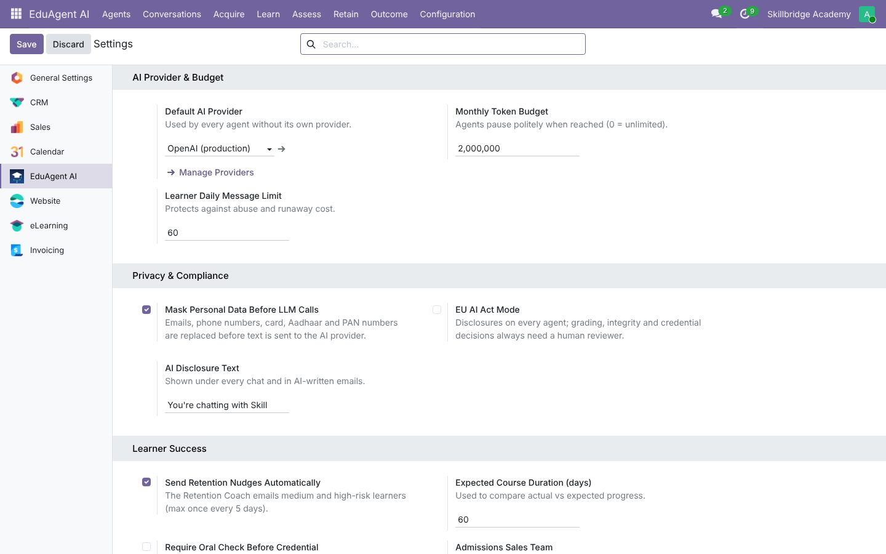
    </div>
    <div style="margin:34px 0 10px">
      <h4 style="margin:0 0 6px;color:#1d2433;font-size:20px;font-weight:600">2. Any AI provider</h4>
      <p style="margin:0 0 14px;color:#5b667a;font-size:15.5px;line-height:1.6">OpenAI, Anthropic Claude, Google Gemini or any OpenAI-compatible endpoint (Azure OpenAI, Ollama, vLLM, Groq). Use a fast model for chat and a main model for grading. A built-in Demo provider works with no key.</p>
      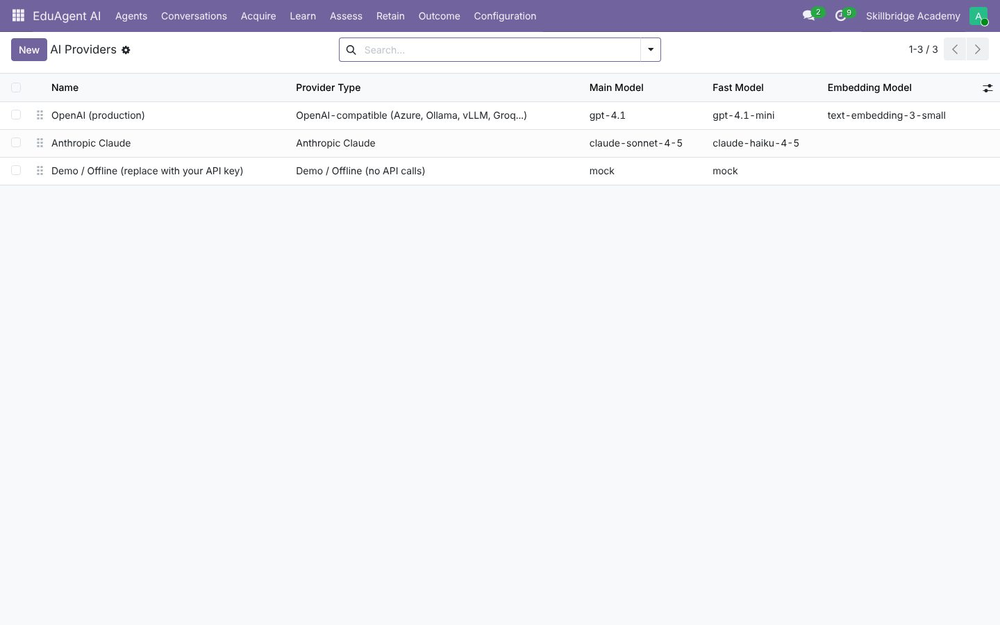
    </div>
    <div style="margin:34px 0 10px">
      <h4 style="margin:0 0 6px;color:#1d2433;font-size:20px;font-weight:600">3. Audit and usage log</h4>
      <p style="margin:0 0 14px;color:#5b667a;font-size:15.5px;line-height:1.6">Tokens, estimated cost, latency, status and high-risk flag for every call, with pivot and graph views by agent and month.</p>
      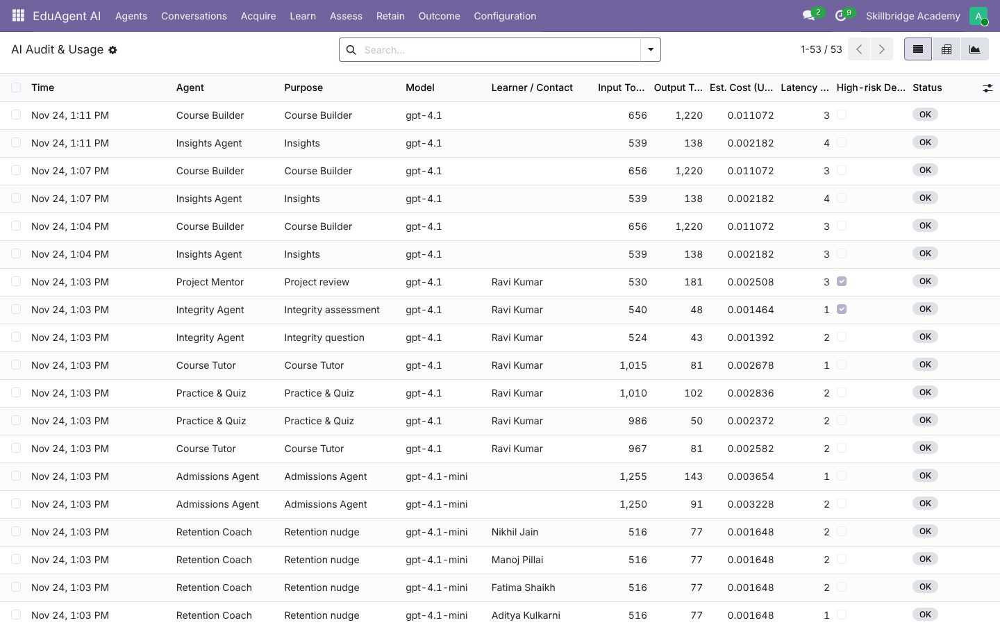
    </div>
    <div style="margin:34px 0 10px">
      <h4 style="margin:0 0 6px;color:#1d2433;font-size:20px;font-weight:600">4. REST API for BI tools and MCP connectors</h4>
      <p style="margin:0 0 14px;color:#5b667a;font-size:15.5px;line-height:1.6"><code>GET /eduagent/api/v1/kpis</code>, <code>GET /eduagent/api/v1/learners/at-risk</code>, <code>POST /eduagent/api/v1/chat</code>. Keys are stored as hashes, scoped read-only or chat, and run with a chosen user's access rights.</p>
      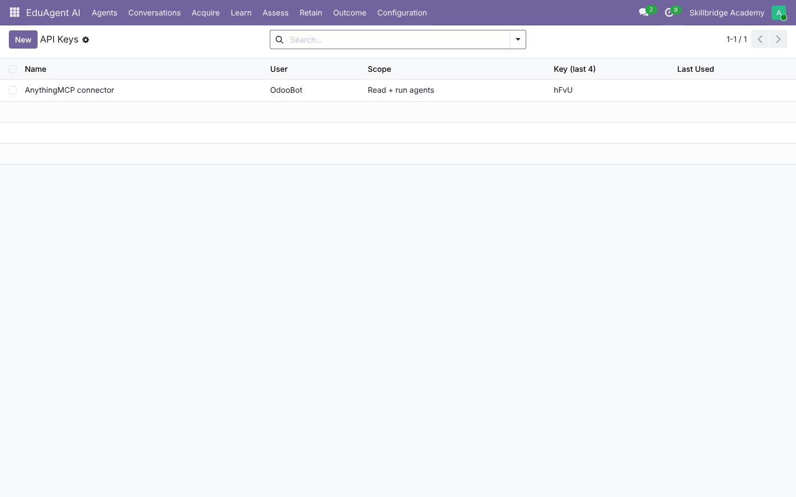
    </div>
  </div>
  <!-- TECH -->
  <div style="margin-top:64px">
    <div style="color:#1fa9c9;font-weight:600;letter-spacing:3px;font-size:13px">SECTION 07 &middot; TECHNICAL</div>
    <h2 style="margin:6px 0 16px;color:#0e1b39;font-size:32px;font-weight:700">Tested, documented, ready to deploy</h2>
    <table style="width:100%;border-collapse:collapse;font-size:15px">
      <tr style="background:#0e1b39;color:#fff"><th style="text-align:left;padding:10px 14px">Item</th><th style="text-align:left;padding:10px 14px">Details</th></tr>
      <tr><td style="padding:10px 14px;border-bottom:1px solid #e3e7ee;width:28%"><b>Odoo version</b></td><td style="padding:10px 14px;border-bottom:1px solid #e3e7ee">19.0 Community and Enterprise (Odoo Online not supported: custom code)</td></tr>
      <tr><td style="padding:10px 14px;border-bottom:1px solid #e3e7ee"><b>Depends on</b></td><td style="padding:10px 14px;border-bottom:1px solid #e3e7ee">eLearning (+ certifications), Website, Portal, CRM, Sales, Invoicing. Python: <code>requests</code> (already shipped with Odoo)</td></tr>
      <tr><td style="padding:10px 14px;border-bottom:1px solid #e3e7ee"><b>Automated tests</b></td><td style="padding:10px 14px;border-bottom:1px solid #e3e7ee">36 Odoo unit and HTTP tests in <code>tests/</code> (run with <code>--test-enable --test-tags=/zivoit_eduagent_ai</code>), all passing on a fresh Odoo 19 database. Tests run offline on the Demo provider.</td></tr>
      <tr><td style="padding:10px 14px;border-bottom:1px solid #e3e7ee"><b>Browser tests</b></td><td style="padding:10px 14px;border-bottom:1px solid #e3e7ee">67 end-to-end checks in Chrome: every menu, the website chat, learner hub, tutor, practice, project submission, integrity check, SCORM completion and credential verification. No JavaScript console errors and no server errors.</td></tr>
      <tr><td style="padding:10px 14px;border-bottom:1px solid #e3e7ee"><b>Security</b></td><td style="padding:10px 14px;border-bottom:1px solid #e3e7ee">Two groups (Staff, Administrator), multi-company rules, CSRF on every form and chat, learners can only see their own conversations and records, SCORM path-traversal protection, API keys stored as SHA-256 hashes, API keys visible to administrators only</td></tr>
      <tr><td style="padding:10px 14px;border-bottom:1px solid #e3e7ee"><b>Scheduled jobs</b></td><td style="padding:10px 14px;border-bottom:1px solid #e3e7ee">Retention (daily), fee reminders (daily), credential issuing (hourly), knowledge re-index (every 6 h)</td></tr>
      <tr><td style="padding:10px 14px;border-bottom:1px solid #e3e7ee"><b>Front end</b></td><td style="padding:10px 14px;border-bottom:1px solid #e3e7ee">Lightweight framework-free chat widget; works with any Odoo website theme and on mobile</td></tr>
      <tr><td style="padding:10px 14px"><b>Languages</b></td><td style="padding:10px 14px">Agents reply in the learner's language; all UI strings are translatable</td></tr>
    </table>
  </div>

  <!-- SETUP -->
  <div style="margin-top:56px;background:#eef4fb;border-radius:14px;padding:26px 30px">
    <h2 style="margin:0 0 12px;color:#0e1b39;font-size:28px">Set up in 5 minutes</h2>
    <ol style="font-size:15.5px;line-height:1.9;margin:0;padding-left:20px">
      <li>Install <b>EduAgent AI</b>. Every screen works immediately in Demo mode, with no key needed.</li>
      <li><b>EduAgent AI &gt; Configuration &gt; AI Providers</b>: add your OpenAI / Claude / Gemini / Ollama key, click <i>Test Connection</i>, then <i>Set as Company Default</i>.</li>
      <li>Open each course &gt; <b>AI (EduAgent)</b> tab &gt; <i>Index for AI now</i> (re-indexing then runs automatically).</li>
      <li>Add your FAQ and refund policy under <b>Retain &gt; FAQ &amp; Policies</b>.</li>
      <li>Share <code>/eduagent</code> (admissions) on your website and point learners to <b>My Account &gt; AI Learning Hub</b>.</li>
    </ol>
  </div>

  <!-- LET'S TALK -->
  <div style="margin-top:56px;background:#0e1b39;border-radius:18px;padding:36px 40px;color:#fff">
    <div style="color:#1fa9c9;letter-spacing:3px;font-size:13px;font-weight:600">LET'S TALK</div>
    <h2 style="color:#fff;margin:8px 0 10px;font-size:30px">Need it tailored to your academy?</h2>
    <p style="color:#c9d3e6;font-size:16px;line-height:1.7;margin:0 0 14px">Implementation, migration from Moodle / TalentLMS / Teachable / spreadsheets, custom agents, WhatsApp channel and a managed AI service by <b style="color:#fff">Zivo IT Technologies</b>, official Odoo partner, Hyderabad.</p>
    <p style="margin:0;font-size:16px;color:#fff">www.zivoit.com &nbsp;&middot;&nbsp; info@zivoit.com &nbsp;&middot;&nbsp; +91 98665 71616</p>
  </div>
  <p style="color:#8a94a6;font-size:12.5px;margin-top:18px">Screenshots are from a demo academy with sample data. AI responses depend on the provider and model you connect.</p>
</div>
</section>
